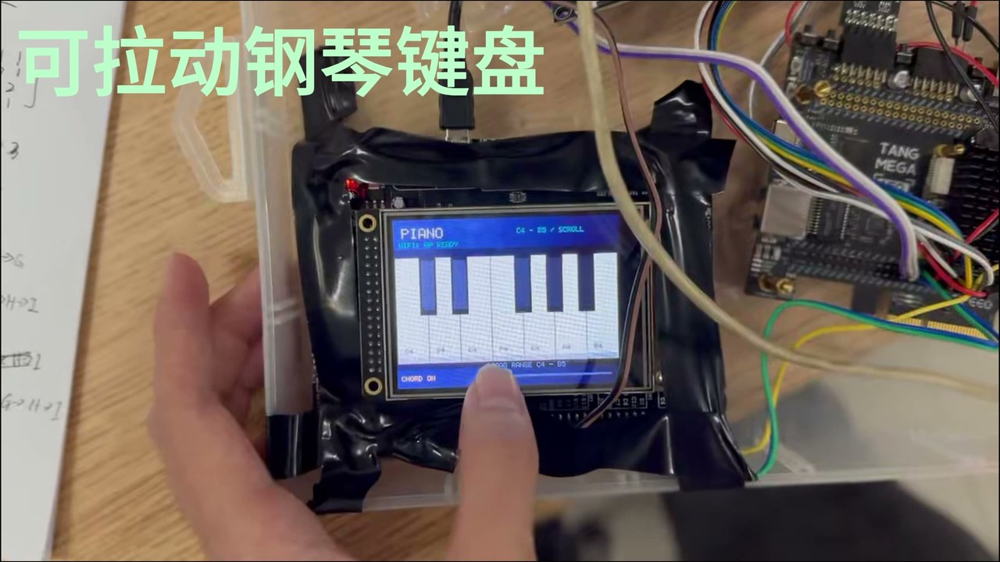
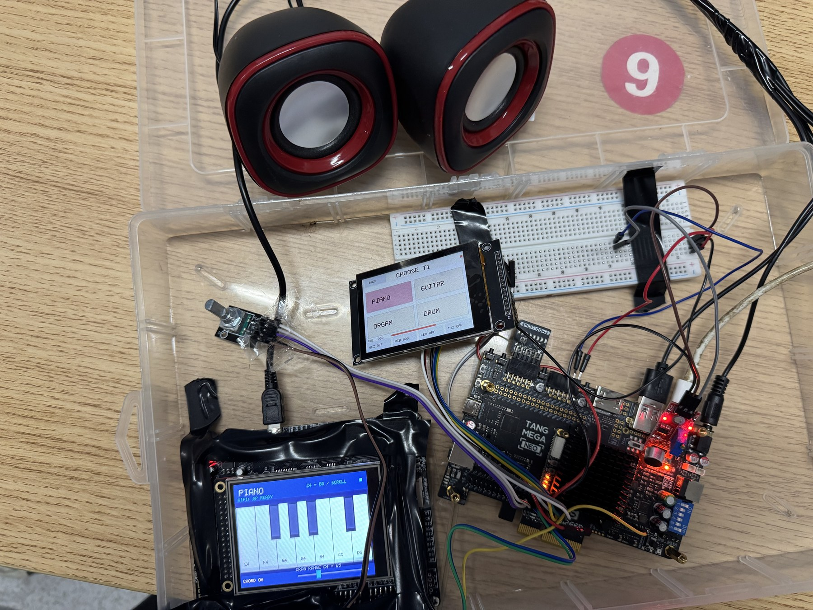
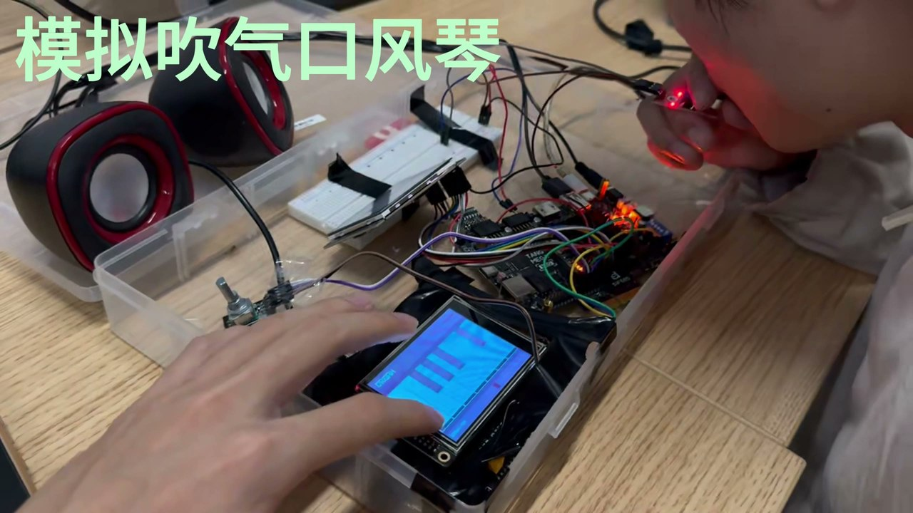
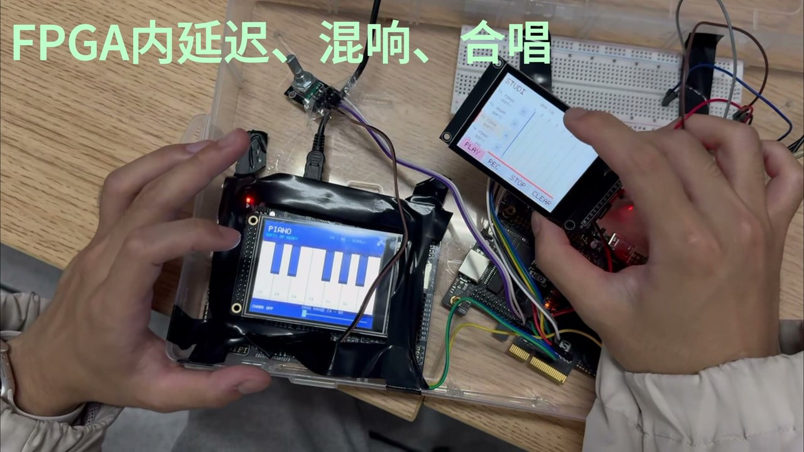
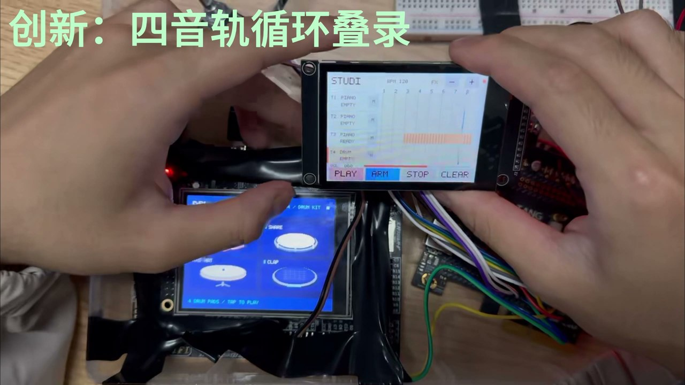
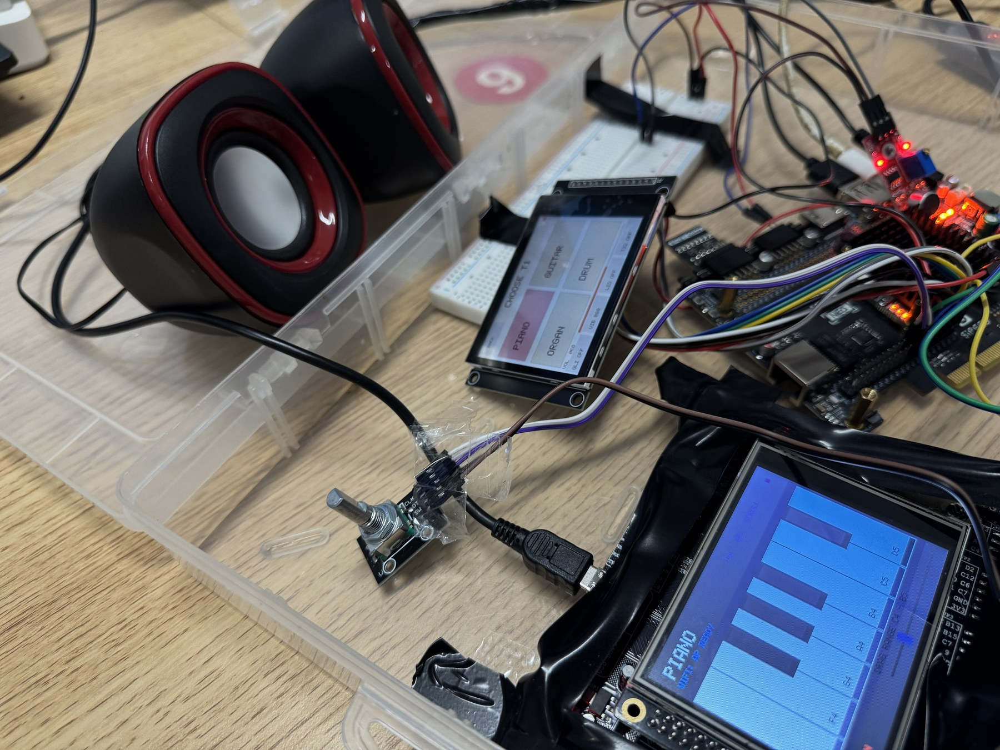
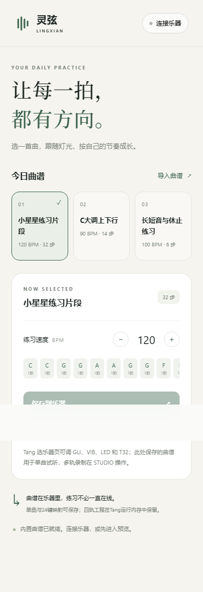
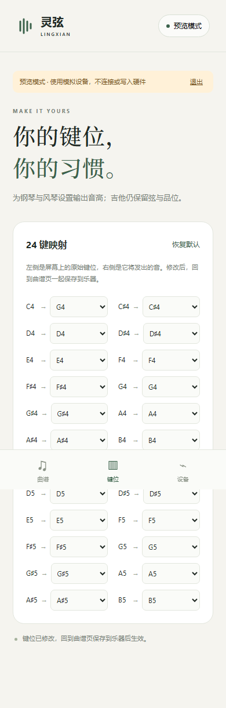

01
指尖上的多种乐器
钢琴、吉他、风琴与鼓声，配合和弦、滑音和颤音，让同一套硬件拥有不同的演奏方式。
2026 嵌入式大赛 / FPGA 作品
把数字乐器、效果器与循环叠录，
放进同一枚 FPGA。
这是灵弦，一个可以亲手演奏的音乐工作台。
GOWIN GW5AT-60B · VERILOG · ANDROID

实时合成 · 独立包络
事件循环 · 逐层叠录
FPGA 系统参考时钟
延迟 · 混响 · 合唱
01 / WATCH & LISTEN
从一声琴音到四轨合奏，
约两分半，听见硬件里的可能。
视频暂时未能加载，请尝试下方的原片下载链接。
作品实际演示 · 保留原声 · 点击章节可跳转
下载 1440p 原片02 / MADE TO PLAY
触摸、滑动、吹气、转动旋钮。
把演奏动作，变成声音的表情。

钢琴、吉他、风琴与鼓声，配合和弦、滑音和颤音，让同一套硬件拥有不同的演奏方式。

演示中的模拟吹气口风琴，将麦克风门控与触摸音符配合，让声音随演奏动作进入与释放。

ADSR 包络、多级混音、延迟、混响与合唱，在硬件音频链路中处理，旋转编码器控制主音量。

四轨事件循环示意
04 / INSIDE THE CIRCUIT
控制输入与音频合成衔接，
核心声音处理在 FPGA 中完成。
外部演奏控制 / HOST UART
工作台触摸 / 曲谱 / 麦克风门控
PT8211 DAC → 耳机 / 音箱
工作台显示 / LED 指引

时序与向量数据来自随包归档报告；视频为作品演示。归档 Tang37 记录仍标记实机验收待完成。
查看原始验证记录

05 / CONNECT & CREATE
配套 App 提供曲谱选择、速度和键位映射，并通过原配无线链路与设备协作。Java 原生壳与 Web 界面源码均随工程提供，也可离线打开网页体验模拟配置。
下载 Android AppAndroid 8.0+ · 对应原配控制链路
页面截图来自归档浏览器检查，完整四轨操作在 FPGA 工作台完成。